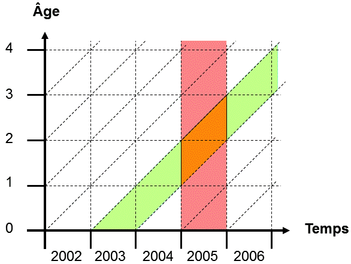
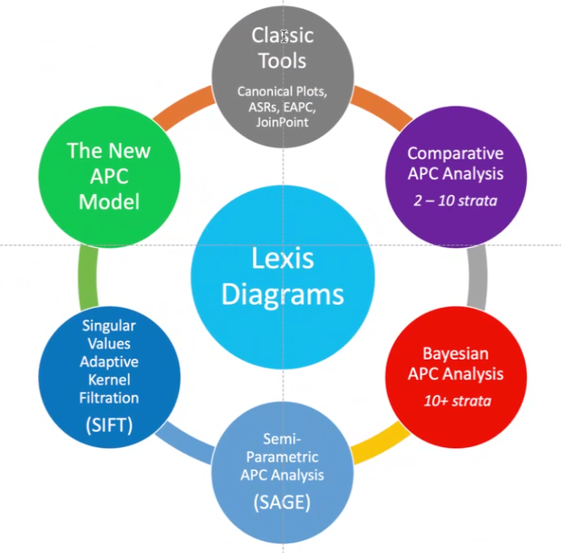

GPT
lexis
[
code
] [
docs
] [
issues
]
A modular Web toolbox to assemble Lexis diagrams
FAIRly
and privately (no data or computation circulated by servers).
...
Notebooks
https://observablehq.com/@siliconjazz/lexis-diagram-interactive
https://epiverse.github.io/modules/iarc/
Phil and Adalberto, planning tbox components: 